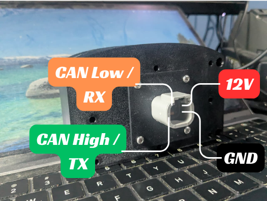
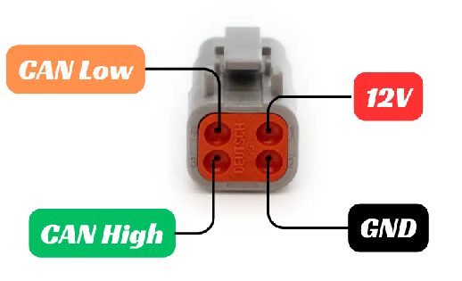
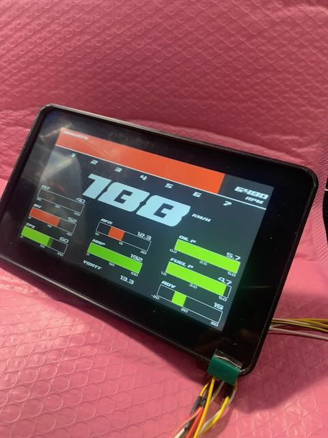
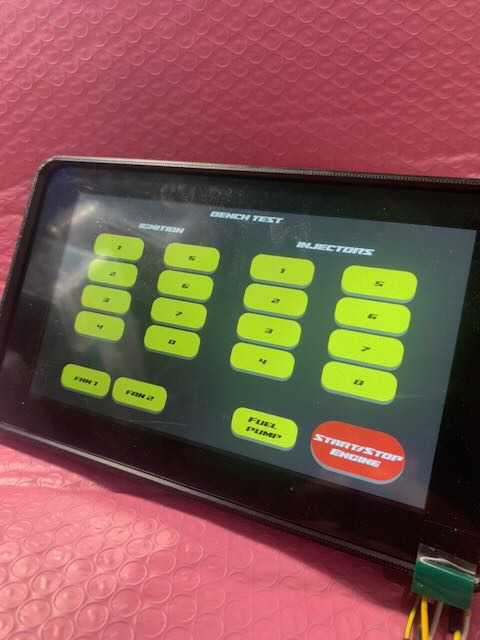
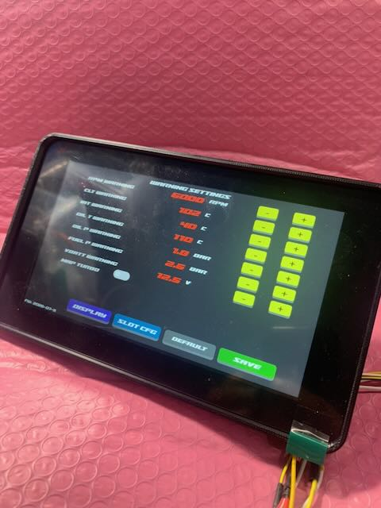
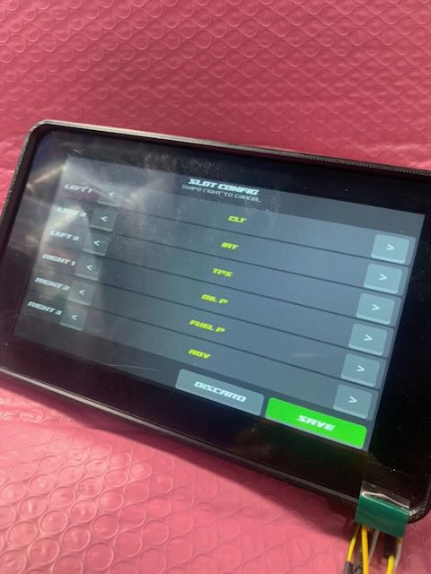
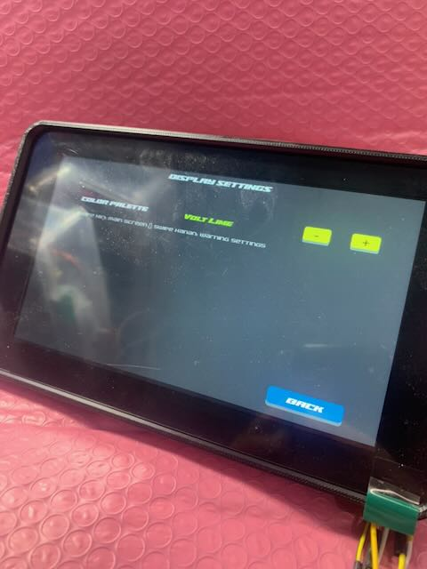
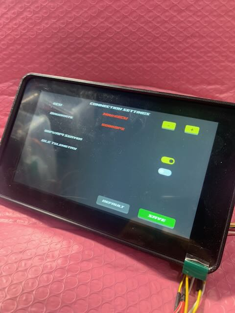

Mazduino Racedash Pro¶
Gambaran Umum¶
Mazduino Racedash Pro adalah varian dash display digital dengan layar berukuran lebih besar, tersedia dalam pilihan 4.3", 5", dan 7". Berbeda dengan varian Mazduino Racedash (3.5" dan 4") yang dikonfigurasi melalui WiFi dan browser, seluruh pengaturan Racedash Pro dilakukan langsung dari layar (touchscreen) tanpa perlu terhubung ke HP/laptop.
| Varian | Ukuran Layar | Konektor |
|---|---|---|
| Racedash Pro 4.3" | 4.3 inch | DTM4 (Deutsch DTM 4 Pin) |
| Racedash Pro 5" | 5 inch | DTM4 (Deutsch DTM 4 Pin) |
| Racedash Pro 7" | 7 inch | DTM4 (Deutsch DTM 4 Pin) |
Fitur Utama¶
- Layar sentuh (touchscreen) sehingga seluruh pengaturan dashboard dilakukan langsung di layar, tanpa aplikasi atau koneksi WiFi tambahan
- Menampilkan RPM, gear indicator, kecepatan, dan data sensor lain secara real-time
- Mendukung komunikasi ke ECU melalui CAN Bus atau Serial, tergantung ECU yang digunakan. ECU berbasis Speeduino menggunakan mode Serial, sedangkan rusEFI, Haltech, dan MaxxECU menggunakan mode CAN Bus
- Tersedia halaman Bench Test khusus untuk ECU rusEFI
Fitur via WiFi¶
Meskipun sebagian besar pengaturan Racedash Pro dilakukan langsung dari touchscreen, ada beberapa fitur yang tetap memerlukan koneksi WiFi ke situs Mazduino, yaitu update firmware dan custom splash screen.
Update Firmware (USB atau OTA)¶
Update firmware Racedash Pro dapat dilakukan dengan dua cara:
- USB — membuka case Racedash Pro, lalu menghubungkan port/pin USB TTL internal ke komputer secara langsung.
- OTA (Over-The-Air) — melalui WiFi menggunakan Mazduino Flasher pada mazduino.com/dashboard/flasher, tanpa perlu membuka case. Hubungkan HP/laptop ke WiFi yang dipancarkan oleh Racedash Pro (atau pastikan berada di jaringan WiFi yang sama), lalu pilih model Racedash Pro yang sesuai pada Select Device — pastikan device dipilih dengan benar — sebelum klik Start Flashing.
Custom Splash Screen¶
Racedash Pro mendukung splash screen (gambar/logo) custom yang tampil saat perangkat baru menyala. Splash screen dibuat melalui Splash Screen Generator dan diunggah ke Racedash Pro melalui WiFi.
- Buka mazduino.com/splash-generator melalui browser HP/laptop.
- Buat splash screen sesuai keinginan mengikuti instruksi pada halaman tersebut.
- Unggah hasilnya ke Racedash Pro melalui koneksi WiFi yang dipancarkan oleh device.
Konektor DTM4 / 4 Pin¶
Racedash Pro menggunakan konektor DTM4 (Deutsch DTM 4 Pin) yang sama dengan varian Racedash 4", baik dari sisi bentuk fisik konektor maupun fungsi pin.

Dash connector side

Cable connector side
| No. Pin | Deskripsi |
|---|---|
| 1 | 12V Power Supply |
| 2 | Ground |
| 3 | CAN High / TX |
| 4 | CAN Low / RX |
Catatan:
- Pin 3 dan 4 berfungsi sebagai CAN High/CAN Low untuk ECU rusEFI, Haltech, dan MaxxECU (mode CAN Bus).
- Khusus untuk ECU Speeduino, pin 3 dan 4 berfungsi sebagai TX/RX Serial, karena Speeduino tidak memiliki CAN Bus native.
Pengaturan via Touchscreen¶
Berbeda dengan varian Racedash biasa, Racedash Pro tidak memerlukan koneksi WiFi/browser untuk konfigurasi — semua pengaturan tersedia langsung melalui menu di layar (swipe/tap antar halaman). Menu pengaturan terdiri dari 6 halaman berikut:
- Main Screen
- Bench Test Screen (Khusus rusEFI)
- Warning Setting Screen
- Slot Setting Screen
- Display Setting Screen
- Connection Setting Screen
Main Screen¶

Halaman utama menampilkan data real-time dari ECU:
- Gear indicator & shift light bar di bagian atas (angka gigi 1–7, warna bar berubah mengikuti RPM) beserta nilai RPM di pojok kanan atas
- Kecepatan (KM/H) ditampilkan besar di tengah layar
- 6 slot data tambahan (kiri dan kanan) berupa gauge bar + nilai, misalnya Oil Pressure (OIL P), Fuel Pressure (FUEL P), VBATT, MAP, dan Ignition Advance (ADV) — parameter pada tiap slot dapat diatur melalui Slot Setting Screen
Bench Test Screen (Khusus rusEFI)¶

Halaman khusus untuk ECU rusEFI yang digunakan untuk menguji wiring/actuator sebelum mesin dinyalakan, tanpa perlu bantuan software tambahan di laptop. Tersedia tombol untuk memicu langsung:
- Ignition koil pengapian 1–8
- Injectors injektor 1–8
- Fan 1 dan Fan 2
- Fuel Pump
- Start/Stop Engine
Warning Setting Screen¶

Halaman untuk mengatur batas (threshold) peringatan pada tiap parameter, masing-masing dengan tombol + / - untuk mengubah nilai:
- RPM Warning — batas RPM/shift light
- CLT Warning — batas suhu air (Coolant Temp)
- IAT Warning — batas suhu udara masuk (Intake Air Temp)
- Oil P Warning — batas tekanan oli
- Fuel P Warning — batas tekanan bahan bakar
- VBATT Warning — batas tegangan baterai
Terdapat juga tombol navigasi ke Display dan Slot Cfg, tombol Default untuk mengembalikan ke pengaturan awal, serta tombol Save untuk menyimpan perubahan.
Slot Setting Screen¶

Halaman Slot Config untuk mengatur parameter yang ditampilkan pada tiap slot di Main Screen. Slot tersedia untuk posisi Left 1–3 dan Right 1–3, masing-masing dapat dipilih dari daftar parameter yang tersedia (contoh: CLT, BAT, TPS, OIL P, FUEL P, ADV) dengan cara swipe. Gunakan tombol Discard untuk membatalkan perubahan atau Save untuk menyimpan.
Display Setting Screen¶

Halaman Display Settings untuk mengatur tampilan dashboard:
- Color Palette — pilihan tema/skema warna tampilan (contoh: "Volt Line"), diatur dengan tombol + / -
Tombol Back digunakan untuk kembali ke halaman sebelumnya.
Connection Setting Screen¶

Halaman Connection Settings untuk mengatur mode komunikasi ke ECU:
- ECU — pilih tipe ECU yang digunakan (rusEFI, Haltech, MaxxECU, atau Speeduino), diatur dengan tombol + / -
- Baudrate — baudrate komunikasi CAN Bus mengikuti ECU yang dipilih secara otomatis: 1 Mbps untuk Haltech, dan 500 kbps untuk ECU lainnya
- WiFi/AP Server — tombol on/off untuk mengaktifkan/menonaktifkan WiFi Access Point pada Racedash Pro
- BLE Telemetry — tombol on/off untuk mengaktifkan/menonaktifkan pengiriman data telemetri via Bluetooth Low Energy
Tombol Default mengembalikan ke pengaturan awal, dan Save menyimpan perubahan.
Referensi¶
- Website Mazduino - https://www.mazduino.com/
- Wiki Mazduino - https://wiki.mazduino.com/
- Github Mazduino - https://github.com/mazduino/mazduino